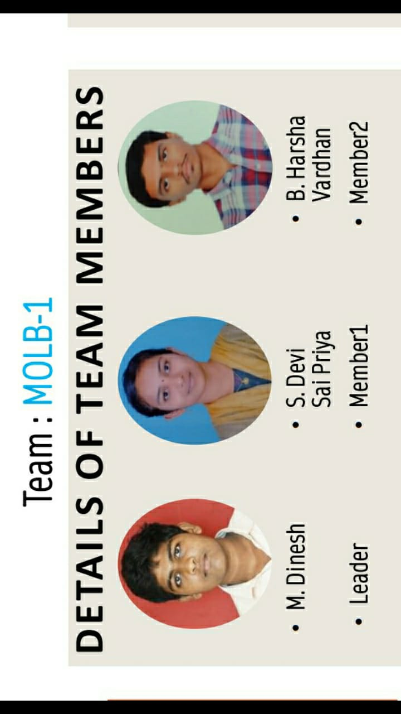
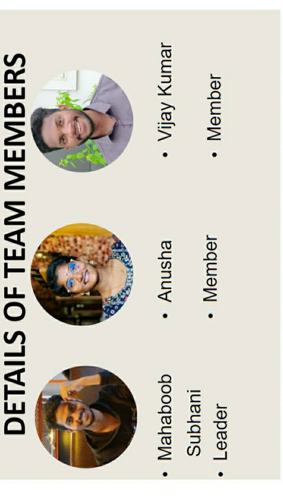
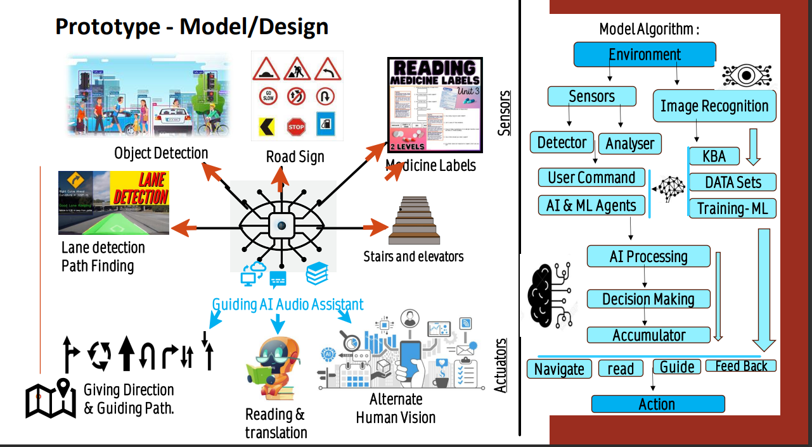

Aiesteru
its truly beautiful isn't it... when
he said .....
“To love without condition, to talk without intention,
to give without reason, care without expectation,
“Love is nurtured by trust, respect, and understanding.” that's the spirit of true love.”
“It is a love that is beyond the physical, and it is a love that is spiritual. It is a love that is eternal.”
“If you really love that person, learn to wait. Maybe you are not meant to be together today, but meant to be in the future.”
“Love is the energy that binds souls together.”
"If you want to understand love, don’t use your eyes. Open your inner eyes because the truth is not associated with beauty. It’s related to emotion."
“A man is made by his beliefs. As he believes. So he becomes.”
“There are three gates to self-destruction and hell: Lust, Anger & Greed.”
“I have a purpose for your pain, a reason for your struggle, and a reward for your faithfulness. Trust me and don’t give up.”
“I regard as great even the smallest gift offered by my devotees in pure love, but even great offerings presented by non-devotees do not please me.”
“Blessed is a human birth, even the dwellers in heaven desire this birth, for true knowledge and pure love may be attained only by a human being.”
“The Key to happiness is the reduction of desires.”
“Do everything you have to do, but not with ego, not with lust, not with envy but with love, compassion, humility, and devotion.”
“Calmness, gentleness, silence, self-restraint and purity: these are the disciplines of the mind.”
how beautiful it is to listen to that person krishna, how amazing feel it give us when we made up ourselves to follow those words...
10-october-2023 9:14PM
sorry little late due to some factors
* hey you have stopped writing to me daily?
sorry actually on 5th october uncle came and same day my internet plan got over. 6th amamma went to uncle's house and im home alone i came to amma,
but here i left my laptop there cz i came direct from college and amamma said, its something shanti pooja for grandfather so not allowed to go into house for 3days 3nights
in addition all my programming data and everything in laptop and laptop at amamma's home today evening i went after college and bring laptop here around 7PM.
and today i got my recharge and the exams and project also completed yeasterday
Or you forgot about me or you are losing interest or you give up or you got someone new ?
....but...😒😒😒
you really asking such questions for real
😑😑 bad girl bad bad stupid
giving up is never an option to me, don't you know it?
someone new..? huh i have no idea what made you think like this
you know i didn't said you, that i cried that day night where i talked to that girl for reason why i talked to girls from my college, i felt embrasment and shy to say you that.
i don't know but it bother me a lot just because of talking to some girl other than, then tell me what made you think im loosing intrest and running for someone, if something like that i rather choose to die.
and even after that day a senior sister gave that girl a warning also and there the issue and rest ended
after project i again into my anti-social. i dont how many time i said you these, but still i can heartfully say it... no other girl can get my attention, no other girl can enter my mind, no girl can replace you.
getting someone new is never gonna happen, cz
its literally like loosing myself and my character
its a disrespect to my mom and my women
if something like that, what about my promises. did i lie to myself?
giving up on us is never an option, each time i prayed god i always god to be center of us and made nothing seperate us. then how can i even get a thought of giving up or someone new...
and mostly, you always been like a only option in my heart and mind.
did i ever treat you as an option..?
till and to end even after end you are the only one i want in life puja, youre the only one all the time i asked god for, i always loving you more and more from the bottom of my heart
* I can't use the study took that way , because I am not allowed to make any account not I am allowed to download any app (I don't have phone of my own)
its not a problem im planning to start a new project only for study if i sucess in it you will have chance to use it before board, for now i'll try to find best tool for study out there which dont need an account
*Today it's is 8october your exams finished yesterday so how was it ? And are you fine?
today 10th exams finished on 9th yester and project and all done today, exams are well but after came here to home i have my book at amamma home so last 3exams are not well due to internet and lack of study resource still i tried my best
now im fine but a little fever due to climate change and today morning i got vomits but now i took medicine and injection its just food poision like due to medicine but now im fine and took last dose of medicine
oii and did you started your medicine course and how is your health now???
#reply to 4 October
*Oh! You say like Alas in you won style, nice one ...but do you mean it!
if i didn't mean it, then what is my need to say those,
see whatever i say to God, you, amma, and myself i only say if i mean, cz i love you all heartfully and just like i dont lie myself i dont lie to you
and truly heartfully mean it what i said it all to you
* You remembered that I said you 'i will take care of you like your mother'.. do you read our old chats?
the thing where start to takecare of me like my mother do and that day you said all many things in around 2am may , i dont need to read cz all the words you said heartfully are always stay in my heart
and you know when im alone, when i feel lonely i use to listen to your songs, and sometimes i re-call this like what you said, it even bring tears, and did you remeber what you asked me after few of this words
"will you mother can love as her daughter" i said you even more than that im sure of it. but that time you said i have a surprise but still you didn't presented me that surprise
bad bad girl
* Hey don't say things which you don't mean it !
if i don't mean i wouldn't even thinking of it, but if i choose to i will not give up, even what i have to do for, how far i go ,i will not give up
Why you say such.. and I was thinking we should stop talking this way , and leave this a things here. Let's end this, it may not work out and I kind of feel like you will hurt me ..
sorry if i said anything wrong way
please let me what what kind of things i still posing like i may hurt you, i will change myself,
and for me, as i promised you all the time even if i get hurt of anything what it is, 'i will never hurt you', and i don't know where i'm still being wrond, that what make you think i may hurt you
whatever please let me know i'll definietly stop being that way
im sure im fuly sure about it
but ont thing is realy i can heartfully say, i may choose to kill myself rather that hurting you.
and don't how a person can think of hurting mother and peroson mother like to them in life
* don't mind or don't be sad by what I am saying, actually I am really hurt these days my classmates are mean to me,
syllabus need to be complet by December and just started it in October....
So much stress, some how manneging but teachers are helping and sometimes I do my favourite things to claim me down...
But the fear of getting betrayed by you is hunting because around the oct and nov in year 2020 something awful happened it brok my heart so I don't want things to repeat...
So if you don't have good intentions then please leave me
i can understand you situation and me feel so bad that im not able to help you.
you said the fear of getting betrayed by me, im heartfully promising in name of god nothing will happen that way
since from start did i done anything that way or anything that pose something that way, even now i choose to not to talk to any girl from college, even i showed you few according to project i blocked them at sunday
and you know that from start when im truly into you, i choose to not even be friends with girls around me, whom talk to me i only use to answer and they are sister to me
and still if anything make you think, that im doing wrong or something ask me straing i will explain
sorry i don't know how to say things properly or even how to ask
but truly i dont want you to have unclear thought, overthinking. like that, still and ilways ready to prove myself,
and if you sense anything wrong about my behaviour or even a thought that make you bother you dont need to ovethink,
ask me straight even its in appropriate whatever kind it is dont hide it ask it straight i dont want the person i wanna share my mylife with have unclear thoughts and mind about us
even i said the same thing to amma to ask me straight if she feel anuthing wrong and i showed amma that these two sisters in my teams and i talked to these few and i dont want to be friend with any i only want to focus on my sucess
just like that if you feel anything wrong, anykind of doubt ask me straingt
and... its not maybe intention its more than like love, heartfully promising on myself i would say that i love you so much and more always
and always...
Hey how are you doing? So far I got nothing to hear from you ,
im, fine and i said you why i failed you talk you since far
come on have you stop or got someone like a girl fan to gf...
😩 this sucks, im only nerd from my class, and anti-social
you still saying a gf to me 😒😒😒
you know what now im going a little mad after this line what you said,
i dont want to answer you like this instread now im insanely want to bite you all around and bite you hard and more then only i want to answer it straight into you L..s
sorry 🙄 i kind of loosing mind,
but keep in mind i will take these all kind of things in a hard copy and put it in communication notes and one day i'll grant your wish that you wish 'me to hurt you' so i'll bite bite bite hurt you this way then i answer each question again so prepare yourself for that my sweet potato
bite 😋bite 😋bite
i want to bite you😋
i want to bite your...😋
bite😋😋😋
*But I want to say sorry for what I said yesterday I was overly emotional I had a bad day I had a panic attack at school, never mind..
Daijobu i will keep that all in mind and give all bites😋,
oii potato when you got this way listen to "markoni union weightloss" with earphones a scientific research said it calm down mind to 60% so try it okay,,
and dont forget to prepare yourself for bites😋 😋😋😋
but today it was nice and you know what recently I have been earning money from here and there by doing projects of my classmates I get paid then in supply stationeries then sell in profit and
I am trying to sell my Geography and political science books to someone but not getting any hopefully it will get sold I enjoy and love to earn money...
wow you doing some good thought , if i suggest you something i may suggest you to sell it in book store or some where like catch a teacher to sell to juniors
recent i did something like this but instead of money i took books in return from a book store i guess i said you this last month
*By the way think about your per-time-job and think about your career too
yes yes,i need to give a look to it for that im proving myself as a project designer and team leader to present myself in real time working industry as a freelance or junior intern for that i need to do great and im gonna do it soon
*YOU KNOW WHAT A TRUE PRINCE OR KING IS THE ONE WHO IS GOOD FROM HEART NOT FROM WEALTH.. but to survive and to enjoy need ..
and I wish believe that you have a heart of gold
yes that you are truly correct and in this short life we can do whatever we wish for if we truly want to fight for it
and just wait for our days, late night weird things in streets, travelling around world, shopping without seeing price tag, lot more morely living a happy life we desire
i never dissapoint you what you belive in me, i will keep myself always pure for you, and my love always unconditional and pure for you. and that heart of gold wanna be yours...
Hey have you received yesterdays messages???? If you have read then I would like to say that ...
I don't want to hurt you I never want to see you in bad ..
instead you know what I have feelings for you and I am afraid of you that you will hurt me ..
I don't myself to be in pain so I just want to stay away from drams in life..
i know youre such a kind adorable person, and my stupud. dont afraid of anything, even if i get hurt or anything its not a matter,
if its not you them whom it goonna be, its always you i want to be share rest of mylife with
dont afraid of anything ask straight cz you have all the rights, and more i love you so much same way its my resoinsibitly of my girls thought of me, its my responsibitly to prove my women her gentlemen stand his honor
its my responsibitly to prove my loyalty
its my resoinsibitly to clear all my girl doubts and keep no secret in between us
Hey I want to know how much do you know me .. I will be asking few questions so prepare yourself.... I guess your exams are over so I want to take a test on you .. don't mind, may I ??
😃😃😃😃😃😃😃😃😃😃😃😃😃😃😃😃😃
really 😃
after so long im hearing something like this and this one of this something you made like a game but it remain incomplete leave that aside we will do it later
for now im excitedly waiting for this
and more excitedly waiting to bite and aswer you
bites😋
bites😋
for me let me know what can i do to clear all my potato doubts.
Let me know if you got all the pages properly and in sequence or not !
yes i received all from your borrowed book and now im gonna visit the link you provide there to earn by skill,
that really a great valuable information for me
sorry if i say anything wrong
now its 10:55PM
Good night sleep well,
always love you My Hinata💝
waiting for the day where im lying beside you, biting you😋 by recalling these then say good night by kissing on forehead
for now turn right hug me tight, let me kiss your head and say
always love you my Hinata💝
good night
11/10/2023 8:40PM
im home, today train a little late and i forgot to say you this
now im going from father home so i need to travel 12km to reach railway station. im going and coming on bike. and i even wearing helmet and mainly im driving slow and carefully
now im going to freshup and all, and you know due to project and competetion my class works went pending and today one subject result given i got 92% in that 😄
and i opened laptop direct after home cz i want to share this with you 😄
you know that im lateral entry joined in 2nd year right while im the only lateral entry in my class, today vice principal sir visited my class and after he serve a little speech
he started praising me and its not a matter for me to care, that sir put all his ego aside to come to talk to me and said few of other class leaders to take any decision after discusing it to me
first i got panic a little then he started saying all the class and my class teacher about how im doing and about my skill
😑 but im too shy at same time its so embrassing
😅 its good at same time i won against his ego
oii how you are doing, are you fine? are you doing meditation? are you sleeping well
and im fine my fever also gone im now strong as before
😄
i guess now i need to freshup food and sleep im too tired,
so good night my princess
always love you a lot
12-oct-2023 : 9:45PM
oiii how you are doing konichiva
🙄 are you still anger on me 👉👈
sorry for the late i had did
🙄agaain today i missed train, i catched one at 8PM + then bite then came home around 9PM
oiii its been 8 days you didn't yes or no for my question about my team name : what it mean by "MLOB-1"
MLOB-1 is my team name and im leader of it,now im gonna reveal answer, MLOB-1 means :
My Only Lady Bug - Only 1
how is it ...?
👉👈 you know what, 🙄 i love the way you send me those messages like asking the way ,whether did i loose intrest something like that
if you still anger on me for late keep it that way😁
its something adorable ,im still laughing sometimes after seeing that messages
🤣 some gf from fan girl 🤣🤣🤣
while im waiting for next train im alone in the station, i started reading that again i took a pic of it, i started laughing by imaging your face
did you fell jealous of my fan girls😏
😅 sorry sorry just kidding
huh!!!
i want to make other girls jealous of my women not my stupid jealous of others
oiii, you didn't said me to stop talking to anyone, i choose it and the way so its my way to not talk talk or not being friend with them
rather than being friend with other girls i love to be alone in my way, here im saying alone cz most are crossing limits while boys and girls around me thats why im only chooose to being myself and focus on sucess for our future
im still want to say the same " whenver or what thing you feel wrong way from mine just let me know it clear i will put myself away from it and change"
one thing i can say heartfully, i can't imagine a life without you, i will not allow myself to cheat, betray or even hurting you i will not let myself go this way. i will always keep myself pure for you
👉👈 cz i love you a lot more like i love myself and i don't allow me to lie to myself
when i started swimming its me and the ocean for my shore, attempt to abond is like going down in ocean to kill myself.
i will not loose my path toward light in the dark road
when i start feel like you are my half, from that day i choose to stay pure no matter what, i never let any girl come in my mind other than you. i will always be this way
but i still love the you asked those question, and don't hesitate to ask when you feel that way. cz you have all rights to ask the information or things you wanna know im always ready to submit myself to my women.
oii hinata , 👉👈 love you so much good night...
sleep well.
13-oct-2023 : 1:24AM
sorry last 2 days i didn't talked anything till now im doing a project, just now i completed cause tomorow last date for submission.
now im going to sleep hope you sleeping well.
and now im go and eat then going to sleep okay
so good night sleep well
love you ^-^
i'll say about this project tomorrow
15-oct-2023 : 11:24AM
Ohiio Mitsuha Chan 😊
Hope you are doing well, how's your days?
how are you? are you sleeping properly
.. mine today i woke up around 9AM
im fine and doing good..
wanna see my project 😄
im curious to show it to you 😄😄
my total me


all the member with me are a single in previous competetion.
now based on new competetion on my team got nominated and this time as per rules only contain 3 members and a female mandatory to represent women education support
that why i have 2 sisters in my team
form that-
Anusha
Priya (CSM or Class-D Leader)
Vijay , these three are from same class as mine: CSM or Class-D
Harsha CSE or class -A leader
Mehaboob (CSE or class -c )
Your Idiot - Team leader 😄
😑 but dont laugh at MY team photos in this 2nd competetion, i just tried of best to respect Adhar card of india
I love my country
bad bad team 2 dont respect Adhar card photos 😅
just kidding but im serious 😑
India is my country and indians are my brothers and sisters Except you 😊
and when come to project

this is my project design, i made it for helping blind people in Artificial intellegence Vision
i hope my project got select to the next level
huh!!! keep this aside
so tell me how you doing with your studies?
Are you still anger on me 👉👈
i guess you don't get a chance to reply and here im again started writing novel
gomen
i'll try my best to not make it remain a novel
okok amma calling me not its 12:35PM , im going for eye check-up today due to over work of projects and presentation from 3 weeks straight 14hrs infront of screen. eyes are still fine but amma saying me to get a computer glasses and mobile, but i refuse to buy a new mobile i bought a laptop for seshant with my saving and the money for new mobile
you know what last night i got tomatos in head again for not sleeping early 🙄
and did you remeber you suggested me a spects im going to buy it soon
but bad bad people someone stole my steel water bottle bad bad
im going to buy that one new also after getting spects i'll show you
now im going
Ittekimas
Love you honey😊
i'll be home soon
👉👈 waiting for your questions also 🙄